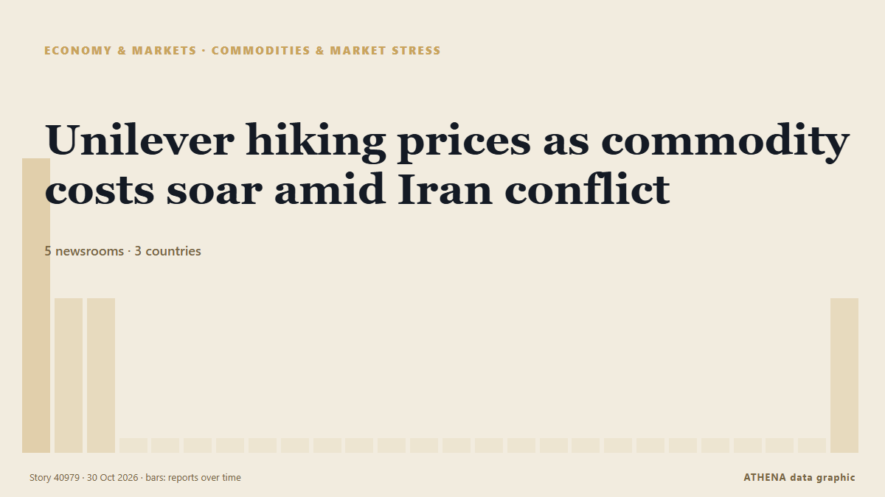

Materias primas y tensión
| 18 oct | 0 |
|---|---|
| 19 oct | 0 |
| 20 oct | 0 |
| 21 oct | 0 |
| 22 oct | 0 |
| 23 oct | 0 |
| 24 oct | 0 |
| 25 oct | 0 |
| 26 oct | 0 |
| 27 oct | 0 |
| 28 oct | 1 |
| 29 oct | 0 |
| 30 oct | 1 |
| 31 oct | 0 |
Los titulares se muestran en inglés, tal como se publicaron.

Unilever hiking prices as commodity costs soar amid Iran conflict
The consumer goods firm revealed underlying sales grew by 5.2% in the three months to September 30, of which 2.3% was due to higher prices. de Evening Standard (London)
4.1Importancia
1.1Riesgo · bajo
69%Confianza
Más en Economía, finanzas y mercados
Más ›Las demás subsecciones de Economía, finanzas y mercados ahora mismo.